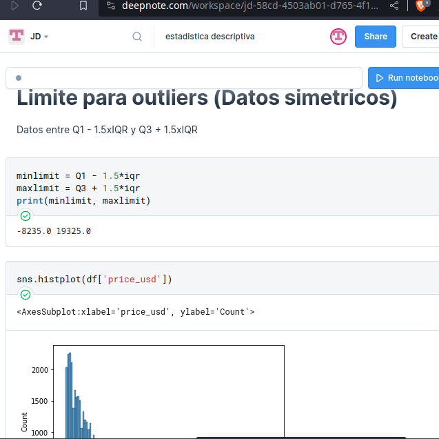

datos_simetricos
Simetrical data
Graphics from a simetrical data.
Jupyther notebooks
is a tool from the data science, this tool supports python language and supports markdown, making it a powerfull kittool from the data science.
Pandas
Is a python library that manipulates the datasets.
This make fastter the data analisys and the data cleanning
Matplotlib
a library python to make graphics.